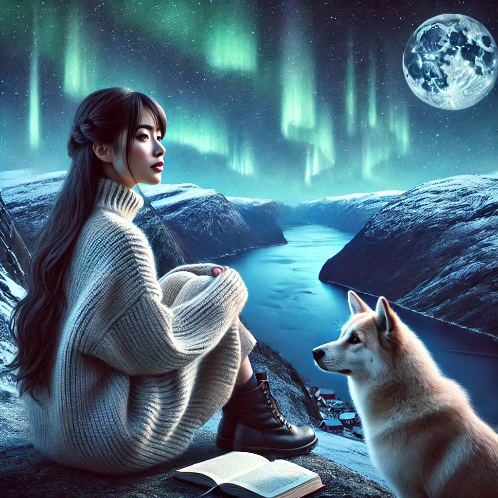

About Me
I’ve always been a daydreamer. Since I was little, I’ve been fascinated by the unknown — whether it was a new idea or a far - off place. My first overseas trip to Finland opened my eyes to the vastness of the world and sparked a deep desire to explore different cultures. Since then, I’ve traveled to many countries, each journey offering something eye-opening. What I cherish most are the moments when I learn from new environments and people, which has inspired me to practice gratitude in my daily life.
Science has always been my passion. I find excitement in discovering the unknown and connecting dots between seemingly unrelated things. Quantum computing is a field full of mysteries, and networking, in a way, is like bringing people and ideas together, which is something I find both fascinating and rewarding. It’s similar to crafting or architecture, where the pieces come together to create something functional and beautiful. That’s where I find my creativity — whether I’m building something from scratch or connecting ideas in new ways.
When I’m not immersed in technology, you’ll likely find me outdoors, hiking, or trying my hand at new projects. I believe in living a balanced life, finding inspiration in both nature and the things I create.
Thanks for visiting and taking a peek into my world. I hope you enjoy the stories and little pieces of my journey as much as I’ve enjoyed living them.
This is how ChatGPT sees me

My Journey
Finland
This was my first trip outside Japan, and it holds a special place in my heart. My mom wanted to see the Aurora and meet Mr. Santa Claus, but while we didn’t catch the Northern Lights, everything else felt like a winter wonderland. Lapland was magical, and I loved every moment. It was also my first encounter with Moomin, and I’ve been a fan ever since. The best part was spending time with my family in my dreamland.
South Korea
My first solo trip to a new country, and I learned quickly that communication is all about effort. I may not have spoken the language, but a few gestures went a long way. Plus, the homemade Korean food was absolutely delicious!
Cambodia
I joined an NGO in Cambodia with my mom, and this trip was truly eye - opening. The lifestyle was so different from mine, and it was heartbreaking to see that not every child had the opportunity to learn and shape their future. It taught me that despite our differences, we all share similar hopes and dreams.
Sri Lanka
I traveled here with JICA (Japan International Cooperation Agency), and it was another eye-opening experience. I met a professor from Waseda University who became like my "Master Shifu." I had the privilege of learning about international relations from him — amazing lectures, all for free!
Mongolia
I’ve always loved nature and animals, and Mongolia was no exception. I rode a horse for the first time by myself, three straight hours without falling. The landscape was stunning, and the Milky Way? It was the most beautiful thing I’ve ever seen.
New Zealand
For anyone who loves animals and nature, New Zealand is paradise — especially with all the volcanoes! Everywhere you look, there are sheep. It’s like a real - life nature documentary.
The Philippines
This trip was different — I stayed with locals instead of in hotels, and we lived without clean water, electricity, or internet. We used rainwater for showers and laundry, and honestly, I didn’t miss anything. It was humbling and reminded me how many distractions we have in modern life. Oh, and the kids who followed me around everywhere? They were super curious!
WA,USA
I chose the U.S. for my undergraduate studies, originally planning to study architecture. But I ended up diving into mathematics and later discovered programming, which felt like creating in virtual worlds. It wasn’t an easy journey, especially with the pandemic, but it made me more confident and stronger.
Norway
Norway has always been my favorite country ever. I attended a concert of my favorite artist, and the vibe was so peaceful, it made me feel completely at ease. The natural beauty and tranquility of Norway left a lasting impression on me.
Denmark
Denmark was an unexpectedly exciting trip. I was blown away by the historical sites, beautiful architecture, and unique artwork displayed everywhere in the city. The modern museum was a standout, and I’d love to return someday to explore more.
The UK
I visited friends in Oxford at the end of my European trip. The university was absolutely massive, and its historic campuses were awe - inspiring. It was the perfect way to cap off an unforgettable adventure.
Canada
I’ve always wanted to pursue a master’s, and my background in cloud computing and IoT led me to explore computer networking. Little did I know that quantum computing would grab my attention. After taking an online course at my previous company, I couldn’t resist exploring this fascinating world and its potential in the future of networking and cybersecurity. Now, I’m in Calgary, pursuing a master’s in quantum computing.
Art Work
Snowflake Ball
I made snowflake balls with a Cricut at my university’s makerspace, and a classmate said, “Hey, that would make a cool lantern!” So I handed a couple over, and next thing I knew, they were glowing—thanks to some Arduino or Raspberry Pi wizardry (I still don’t know which one). Just proof that art, tech, and spontaneous teamwork can lead to unexpectedly cool things.
My Tiny Farm
I've always loved designing and growing things, so I built a farming bed for my balcony, complete with a roof. That year, I grew all kinds of plants, but the zucchini completely took over—it was chaos, but in the best way.
Drawing
Drawing is my form of therapy. I love sketching my favorite singers while listening to their music, getting lost in their world. Each artist has their own "color," and I enjoy capturing that feeling in my artwork.